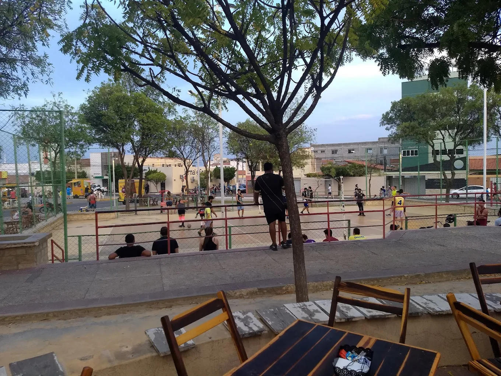

Praça dos Esportes
A Praça dos Esportes de Mossoró, localizada na Avenida Rio Branco, é um espaço público voltado para a prática de esportes e lazer, com quadras esportivas, pista de caminhada, equipamentos de ginástica e áreas de convivência.
A Praça dos Esportes de Mossoró, localizada na Avenida Rio Branco, é um espaço público voltado para a prática de esportes e lazer, com quadras esportivas, pista de caminhada, equipamentos de ginástica e áreas de convivência.